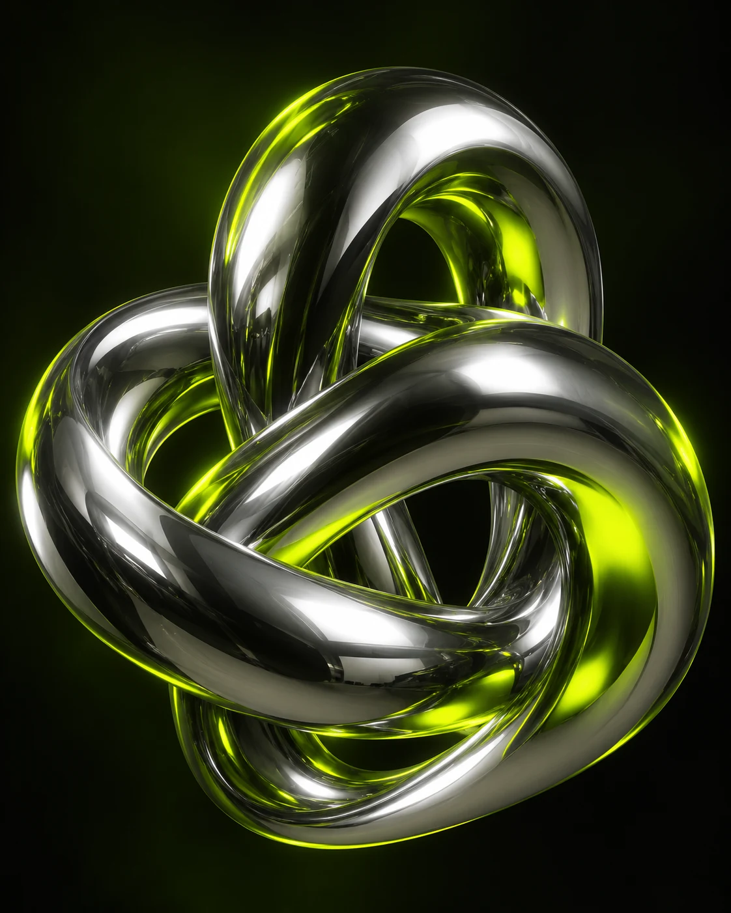

ANTES DO PRIMEIRO MOVIMENTO
Deseja ativar o som
antes de entrar?
Uma trilha ambiente.
Efeitos que acompanham cada movimento.
Volume suave. Você pode ajustar ou silenciar quando quiser.
ANTES DO PRIMEIRO MOVIMENTO
Uma trilha ambiente.
Efeitos que acompanham cada movimento.
Volume suave. Você pode ajustar ou silenciar quando quiser.

01 / POR TRÁS DO @
Não vim para ficar no óbvio.
Gosto de entender como as coisas funcionam — e descobrir o que acontece quando a gente faz diferente. Tecnologia, jogos e criação digital fazem parte desse caminho.
Este é meu espaço na internet. Um ponto de encontro entre o que eu gosto, o que eu exploro e o que ainda quero criar.
02 / MEU UNIVERSO
Entre uma ideia e outra,
sempre existe algo novo para explorar.
Entender, experimentar, construir. A curiosidade é sempre o primeiro comando.
Mundos para descobrir, sistemas para entender e experiências para compartilhar.
Um mesmo ponto de partida. Infinitas formas de enxergar o que pode vir depois.
03 / CONEXÕES ATIVAS
O mesmo @.
Diferentes universos.
04 / PRÓXIMO PASSO
Boas conversas abrem novas possibilidades.
VAMOS CONVERSARUma trilha para explorar.
SINTONIA — AMBIENTE ORIGINAL